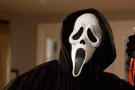
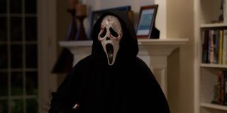

A year after her mother's death, Sidney Prescott (Neve Campbell) and her friends started experiencing some strange phone calls. They later learned the calls were coming from a crazed serial killer, in a white faced mask and a large black robe, looking for revenge. His phone calls usually consist of many questions, the main one being: What's your favorite scary movie? Along with much scary movie trivia, ending with bloody pieces of innocent lives scattered around the small town of Woodsboro. This modern horror classic, which manages to be funny, clever and scary, as a fright-masked knife maniac stalks high-school students in middle-class suburbia.
Craven is happy to provide both tension and self-parody as the body count mounts - but the victims aren't always the ones you'd expect.
